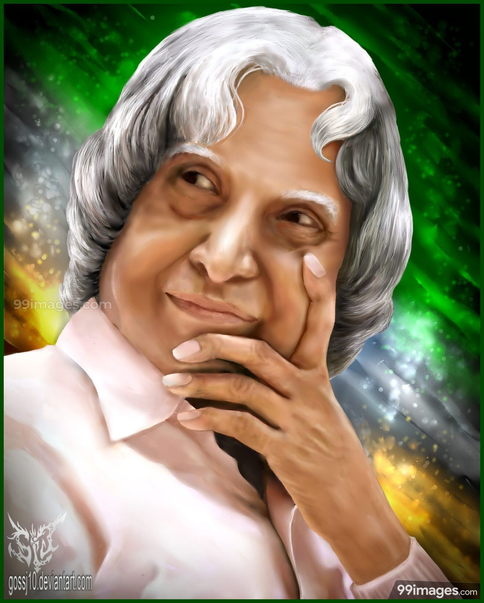
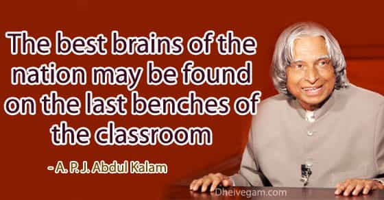

"If you want to shine like a sun, First burn like a sun - The only that's stopping you is YOU, rest are just excuses."
Dr. APJ Abdul Kalam (15 October 1931 – 27 July 2015) is a famous name in the whole world. He is counted among the greatest scientists of the 21st century. Even more, he becomes the 11th president of India and served his country. He was the most valued person of the country as his contribution as a scientist and as a president is beyond compare.
Apart from that, his contribution to the ISRO (Indian Space Research Organization) is remarkable. He headed many projects that contributed to the society also he was the one who helped in the development of Agni and Prithvi missiles. For his involvement in the Nuclear power in India, he was known as “Missile Man of India”. And due to his contribution to the country, the government awarded him with the highest civilian award.
While delivering a lecture at the Indian Institute of Management Shillong, Kalam collapsed and died from an apparent cardiac arrest on 27 July 2015, aged 83. Thousands, including national-level dignitaries, attended the funeral ceremony held in his hometown of Rameswaram, where he was buried with full state honours.

PERSONAL LIFE
Dr. Avul Pakir Jainulabdeen Abdul Kalam, was born on 15 October, 1931 at Rameshwaram, Tamil Nadu.He was the son of a humble fisherman who owned a boat. In order to supplement his father’s income, he used to distribute newspapers after attending school. In school, he was an average student, but hardworking and with a keen desire to learn. He was also fond of playing veena. Despite being a great and honoured man, his simplicity is personified, extremely down to Earth, kind and gentle. His love for children is revealed in the fact that even after holding the highest constitutional title he has been touring the entire nation, meeting school students, talking to them, lecturing them, interacting with them and inspiring them. All he wants to do is to open a small school in Rameshwaram and teach the children there, once he retires.All Indians are proud of his great achievements and humble persona. He observeed strict discipline, practices vegetarianism, teetotalism and celibacy. He read both the Quran and the Bhagwad Gita and his book ‘Guiding Souls’: Dialogues on the purpose of life’ reveals his spiritual facets too. Due to his open, approachable nature, he was referred to as ‘People’s President’. He showed that money can’t be a barrier to dreams, as he himself was from a poor family. He will continue to be a source of inspiration to one and all.
EDUCATION AND CAREER
Education
In his school years, Kalam had average grades but was described as a bright and hardworking student who had a strong desire to learn. He spent hours on his studies, especially mathematics. After completing his education at the Schwartz Higher Secondary School, Ramanathapuram, Kalam went on to attend Saint Joseph's College, Tiruchirappalli, then affiliated with the University of Madras, from where he graduated in physics in 1954. He moved to Madras in 1955 to study aerospace engineering in Madras Institute of Technology. While Kalam was working on a senior class project, the Dean was dissatisfied with his lack of progress and threatened to revoke his scholarship unless the project was finished within the next three days. Kalam met the deadline, impressing the Dean, who later said to him, "I was putting you under stress and asking you to meet a difficult deadline".He narrowly missed achieving his dream of becoming a fighter pilot, as he placed ninth in qualifiers, and only eight positions were available in the IAF.
Career
He started his career with DRDO in 1958. Here, he designed a small helicopter for the Indian Army. He also became a part of the INCOSPAR Committee under Vikram Sarabhai. He went ahead to join ISRO five years later where he was the project director of SLV III. It was due to the team effort under his leadership that ‘Rohini’ was successfully launched in 1980. This was the beginning of India’s aerospace programme. Kalam initiated an independent work on an expandable rocket project in 1965. In 1969, he received government’s nod to incorporate more engineers in the project. In 1998, along with cardiologist Soma Raju, Kalam developed a low cost coronary stent, named the "Kalam-Raju Stent". In 2012, the duo designed a rugged tablet computer for health care in rural areas, which was named the "Kalam-Raju Tablet".

AWARDS AND HONOURS
Kalam received 7 honorary doctorates from 40 universities. The Government of India honoured him with the Padma Bhushan in 1981 and the Padma Vibhushan in 1990 for his work with ISRO and DRDO and his role as a scientific advisor to the Government. In 1997, Kalam received India's highest civilian honour, the Bharat Ratna, for his contribution to the scientific research and modernisation of defence technology in India. In 2013, he was the recipient of the Von Braun Award from the National Space Society "to recognize excellence in the management and leadership of a space-related project". Some of his Awards and Honours are listed in the table below:
Year of Award or Honour
Name of Award or Honour
2014
Honorary professor
2014
Doctor of Science
2013
Von Braun Award
2012
Doctor of Laws (Honoris Causa)
2011
IEEE Honoury Membership
2010
Doctor of Engineering
2009
Honoury Doctrate
2009
Hoover Medal
2008
Doctor of Engineering (Honoris Causa)
2008
Doctor of Science (Honoris Causa)
2007
Honorary Doctorate of Science and Technology
2007
Honorary Doctorate of Science
2000
Ramanujan Award
1997
Indira Gandhi Award for National Integration
1997
Bharat Ratna
1990
Padma Vibhushan
1981
Padma Bhushan
KALAM'S WRITINGS
India 2020: A Vision for the New Millennium Publishing year: 1998
Wings of Fire: An Autobiography Publishing year: 1999
Ignited Minds: Unleashing the Power within India Publishing year: 2002
The Luminous Sparks Publishing year:2004
You Are Born To Blossom: Take My Journey Beyond Publishing year:2011
Turning Points: A journey through challenges Publishing year:2012
My Journey: Transforming Dreams into Actions Publishing year: 2014